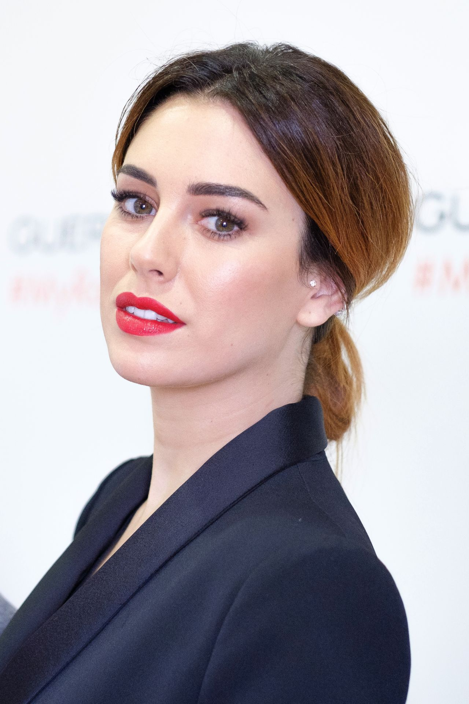
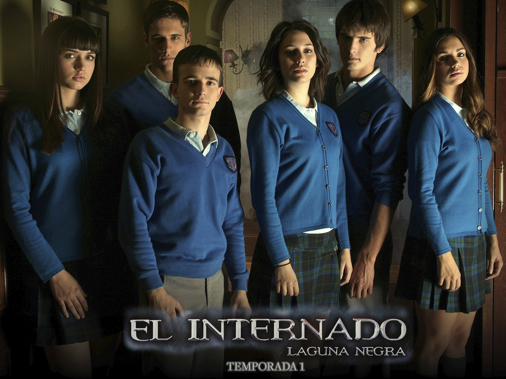
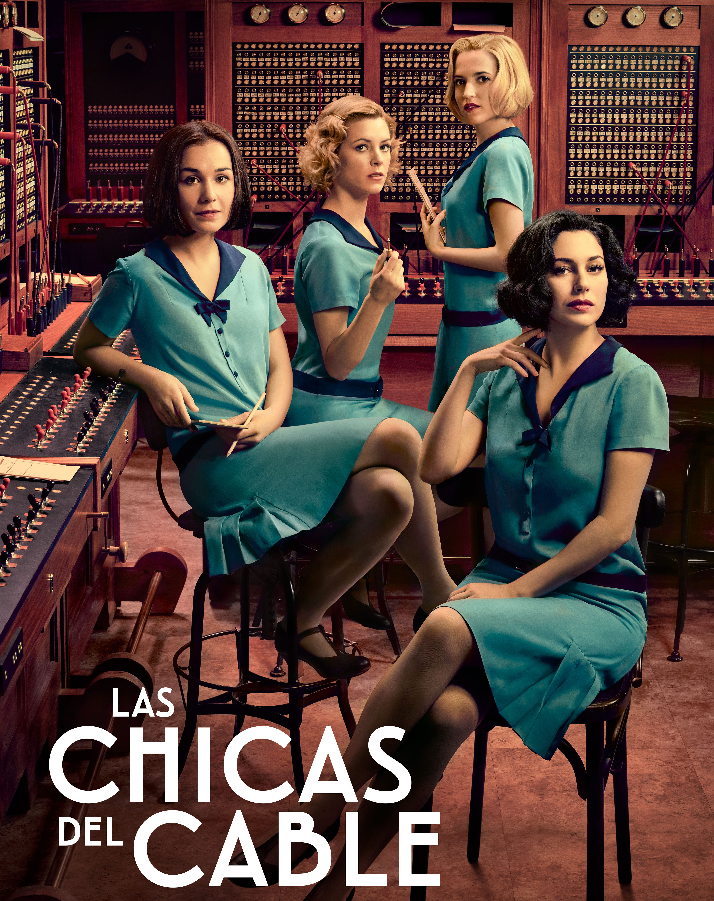
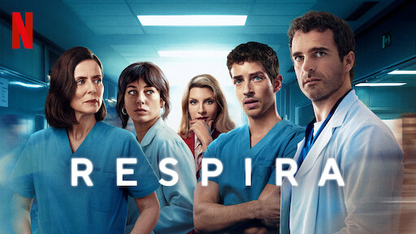
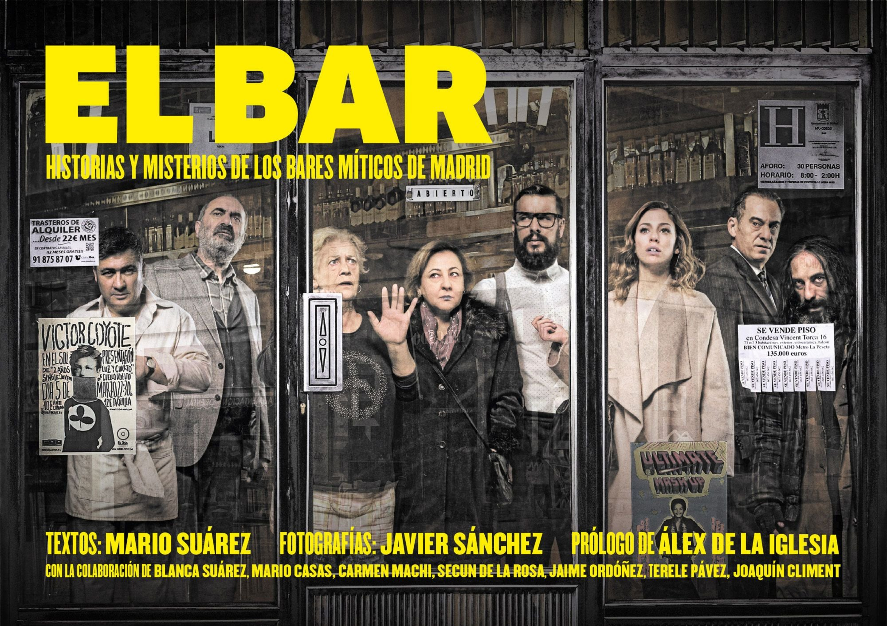

DATOS PERSONALES
- +34 688 125 456
- 21 de octubre de 1988
- Madrid, España
- @blanca_suarez
- blancasuarez@gmail.com
IDIOMAS
- Español- Nativo
- Inglés-C1
ESTUDIOS
- Artes Escénicas - Escuela Tritó----- (1996-2009)
- Comunicación Audiovisual - URJC
- Curso de Interpretación frente a cámara
BLANCA SUÁREZ
Actriz y Modelo Profesional
RESUMEN PROFESIONAL
Soy una actriz española galardonada, conocida por mis papeles en cine y televisión. Mi carrera despegó con "El Internado" y se consolidó con directores como Pedro Almodóvar y Álex de la Iglesia.
Me apasiona la moda, el diseño y los animales. He sido imagen de marcas internacionales y defensora de la producción audiovisual de calidad en España.
APTITUDES
- Interpretación dramática
- Técnica frente a cámara
- Modelaje y doblaje
- Adaptabilidad
- Trabajo en equipo
- Multiculturalidad
EXPERIENCIA
Actriz___________ (2007-Actualidad)
- - Peliculas de suspense -> El internado
- - Películas de drama -> Las chicas del cable
- - Película de comedia -> Perdiendo el Norte
- - Película de aventura -> El Barco
PREMIOS OBTENIDOS
Ganados
- Rostro de revelación -> 2010
- Mejor actriz de televisión -> 2011
- Mejor interpretación femenina -> 2011/2017
- Mejor actriz de cine español -> 2012
- Mejor actriz de serie de televisión -> 2012
- Mujer del año -> 2012
- Revelación femenina del año -> 2013
- Mejor interpretación femenina -> 2018
- Mejor actriz de cine -> 2021
ALGUNA DE SUS ENTREVISTAS
TRAYECTORÍA PROFESIONAL EN LOS ÚLTIMOS 5 AÑOS
| Año | Película / Serie |
|---|---|
| 2024 | Respira (Netflix) |
| 2023 | Me he hecho viral |
| 2022 | El cuarto pasajero |
| 2022 | Testamento |
| 2021 | Jaguar (Serie) |
SERIES MÁS CONOCIDAS



PELÍCULAS DESTACADAS
